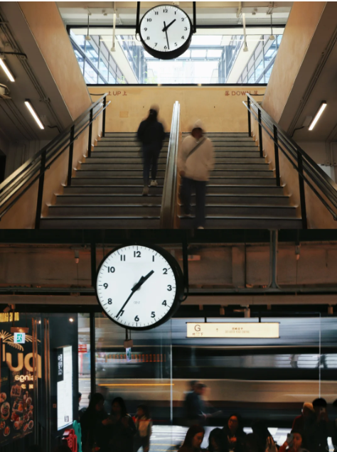
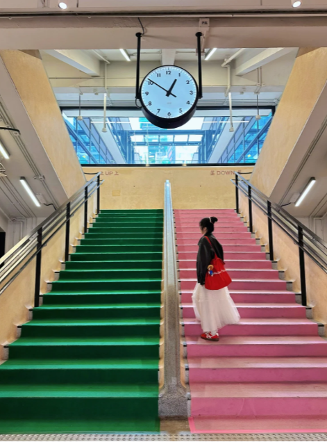
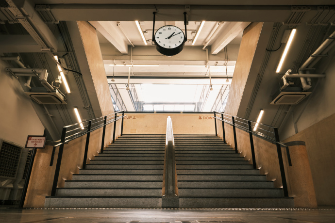
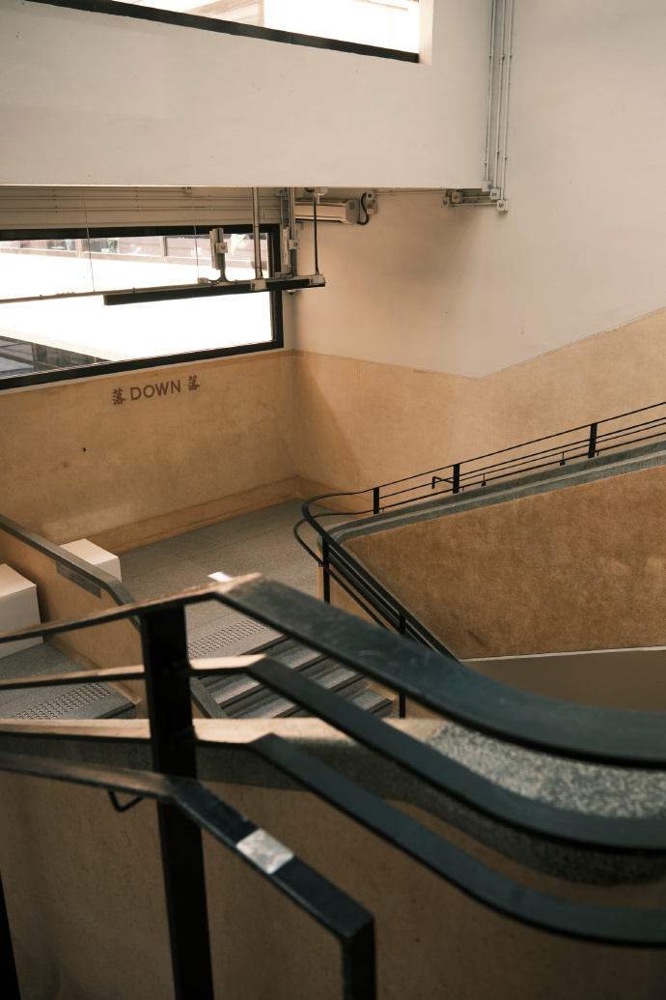

3. 中环 - 中环街市
Transport
艺穗会→步行约5分钟
中环站C口：沿德辅道中走，导航 中环街市德辅道中的门/恒生银行对面
Photo tips
寻找复古楼梯和水磨石地板，这里是《无名》同款取景地，随手拍都有复古感
Nearby food
兰芳园（结志街）：丝袜奶茶+猪扒包
Netizen photos


Reference photos


艺穗会→步行约5分钟
中环站C口：沿德辅道中走，导航 中环街市德辅道中的门/恒生银行对面
寻找复古楼梯和水磨石地板，这里是《无名》同款取景地，随手拍都有复古感
兰芳园（结志街）：丝袜奶茶+猪扒包



